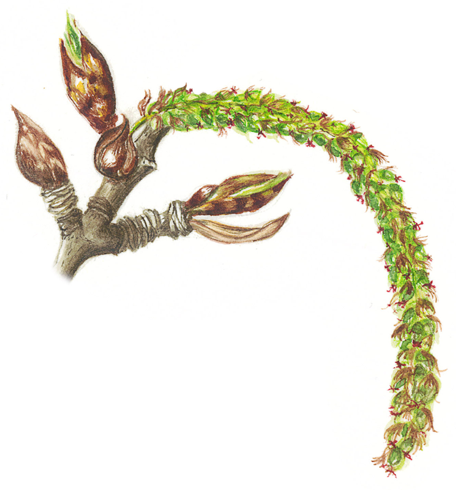

Work Experience
Development Manager (voluntary, part-time)
EqualiTree CIC, UK | 2022 - present
- Deliver Lantra-accredited training to industry professionals (horticulture, agriculture, forestry)
- Design and deliver practical horticultural courses to members of the public
Founder and Director
EqualiTree CIC, UK | 2019 - 2022
Oversaw the development of EqualiTree from start-up stage to developing partnerships and longer-term collaborations. Achievements to date:
- Secured start-up funding to support early-stage activities
- Delivered training courses to industry professionals
- Built several ongoing working relationships with businesses, community groups and social enterprises to develop research and practical solutions to local issues
Volunteer Gardener
National Trust for Scotland
Falkland Palace, Fife, UK
2019 - 2021
- Working alongside staff and volunteers, carried out general maintenance of the Palace garden
- Lifted and dividing perennials, mulched borders, cleared leaves from the main lawn
- Assisted with machinery operations
- Provided a welcoming environment for visitors
Sole Gardener (seasonal)
Private estate
Dunlugas, Aberdeenshire, UK
2019
- Maintenance and management of private estate garden, including Grade II listed Victorian walled garden
- Pruning of mature trees, shrubs, top and soft fruit
- Mowing, edging and strimming large lawns and rough grass
- Growing a range of vegetables and cut flowers from seed
- Care of greenhouse plants, e.g. Pelargonium collection, fan-trained peach, nectarine and figs
Founder and Director
Growing Research Ltd, UK | 2016 - 2018
Self-employed consultant providing bespoke R&D support to research-active SMEs and international NGOs:
- Provided training in statistical methods for applied research staff conducting field trials and ecological research
- Created bespoke data analysis workflows in R Studio for Bioversity International
- Provided early stage business development support to the National Land Based College
- Developed funding proposals for submission to Innovate UK and Horizon 2020 (winning €5M for The James Hutton Institute)
Sustainable Horticulture Development Manager
Stockbridge Technology Centre, UK | 2012 - 2015
- Designed research projects for the commercial horticulture industry
- Established a precision farming training and research centre
- Delivered training workshops in precision farming technologies
- Managed experimental design and analysis of field trials
- Secured £1.4M of Innovate UK funding for Tru-Nject - precision agronomy that combined RTK-GPS autosteer of tractor and implement (spoke-wheel fertiliser injection system), satellite data for precision mapping of crop responses to targeted fertiliser inputs, and data from proximal soil sensing.
Gardener
Royal Botanic Garden Edinburgh, Logan Botanic Garden & Benmore Botanic Garden
Edinburgh, Logan and Argyll Peninsula, UK
2001 - 2003
- Garden maintenance and management of special collections, including specialist plants from New Zealand and Australia, Socotra and Arabian Peninsula, temperate regions of China and the Himalayas
Sole Gardener
Daresbury Properties Ltd
Daresbury, Cheshire, UK
1999 - 2001
- Managed a private, two-acre garden consisting formal lawns, small orchard, fruit cages, vegetable/herb/kitchen garden, herbaceous borders and grassed tennis court
Gardener/Botanist
Jerusalem Botanic Garden
Jerusalem, Israel
1998 - 1999
- Assisting with general maintenance of the Asian and Australian sections
- Ground-truthing maps to ensure planting records were accurate
Production Assistant
James Coles and Sons Nurseries Ltd & Johnsons of Whixley (part-time/casual)
Leicestershire and North Yorkshire, UK
1997 - 2003
- Propagation and management of misting and fogging units, working predominantly with semi-ripe cuttings
- Prepared orders of nursery stock for despatch, working to very tight deadlines, co-ordinating within teams of seasonal and permanent staff
Horticultural qualifications
HND Horticulture with Plantsmanship
SRUC and Royal Botanic Garden Edinburgh
Auchincruive and Edinburgh, UK
2001 - 2003
- Crop production
- Plant identification and physiology
- Integrated Pest Management
- Business management
BTEC National Diploma in Horticulture (3-years)
Broomfield College
Derbyshire, UK
1995 - 1998
- Plant identification
- Horticultural mechanisation
- Fruit and vegetable cultivation
- Nursery management
Professional Qualifications
Level 3 Instructional Techniques
AtLast! Training | 2021
One day online preparation and practical assessment in Edinburgh over two days
Practical ‘train the trainer’ course to qualify as an accredited trainer for Lantra (national land-based training provider)